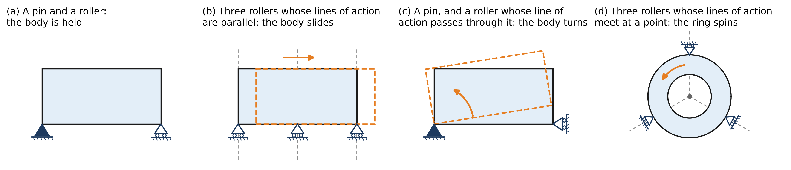
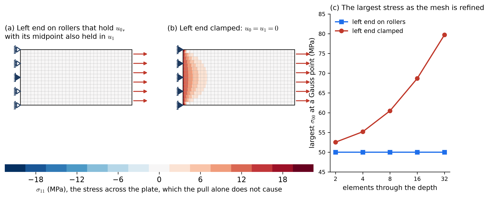
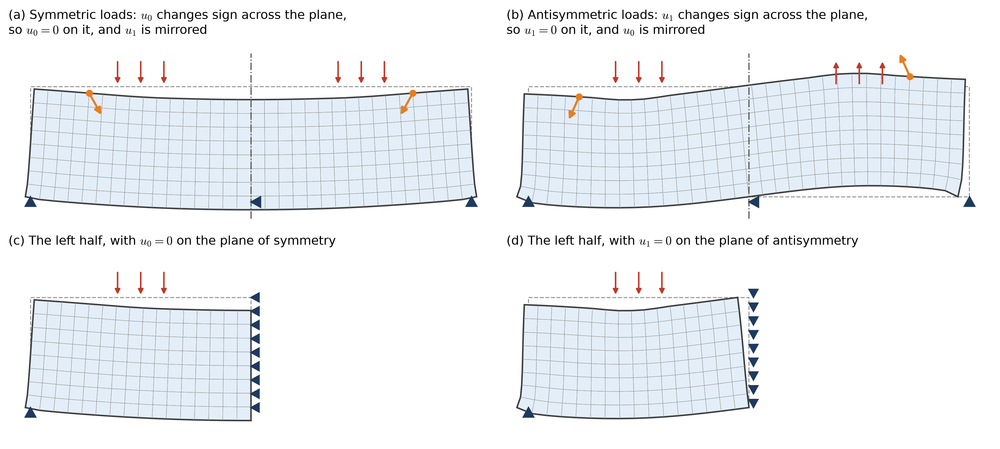
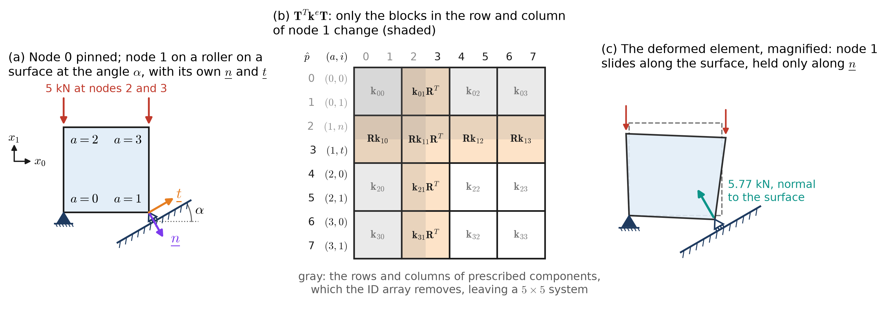
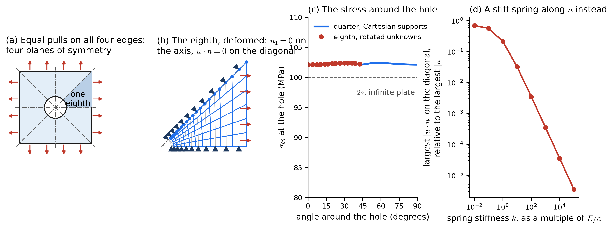
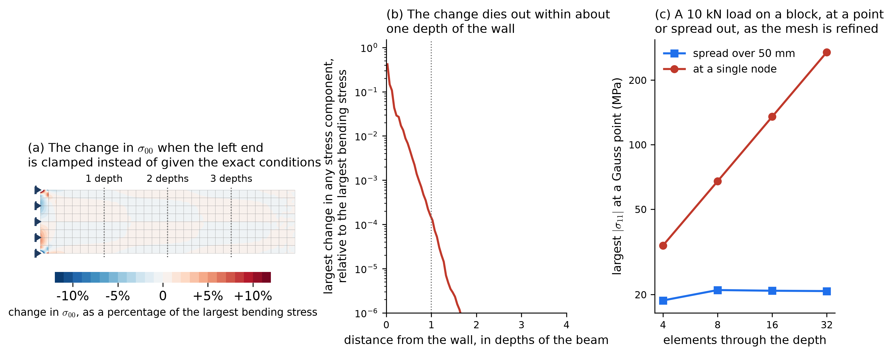

29 Class 29: Supports, Symmetry, and Boundary Conditions in Elasticity
Rigid-body motions, statically determinate and redundant supports, symmetry, supports that are not aligned with the axes, and Saint-Venant’s principle
In Class 26, the boundary of an elastic body was divided once for each direction, and in Class 28, the prescribed displacements and tractions entered the matrix equations through the ID array and the element force vector. The way each kind of boundary condition is imposed is the same as for the Poisson Equation, applied to one component of the displacement at a time. However, for elasticity, boundary conditions not only represent different behavior, but they also have different requirements. Every support drawn on a model is an idealization of a real connection, such as a bolt, a bearing, a weld, or the soil under a footing, and the choice of idealization often affects results. This class works to clarify some of those decisions.
29.1 Three kinds of boundary conditions for elastiticy
| Kind | Poisson Equation | Elasticity, for each direction \(i\) | How it enters the matrix equations |
|---|---|---|---|
| Dirichlet | \(u = g\) on \(\Gamma_g\) | \(u_i = g_i\) on \(\Gamma_{g_i}\) | \(\mathrm{ID}(i, A) = -1\), and the known values move to the right-hand side through \(-\sum_b \underline{\underline{k}}^e_{ab}\,\underline{g}_b\) |
| Neumann | the flux is \(h\) on \(\Gamma_h\) | the traction is \(\sigma_{ij}n_j = h_i\) on \(\Gamma_{h_i}\) | \(\int N_a\,h_i\,d\Gamma\) over the element sides on \(\Gamma_{h_i}\) |
| Robin | \(\hat{a}\,u\) plus the flux is \(\hat{c}\) on \(\Gamma_r\) | a spring support, \(\sigma_{ij}n_j + k_s\,u_i = \hat{c}_i\) | \(\int N_a\,k_s\,N_b\,d\Gamma\) is added to \(\underline{\underline{k}}^e\), and \(\int N_a\,\hat{c}_i\,d\Gamma\) to \(\underline{f}^e\) |
A free surface is a Neumann boundary on which both components of the traction are zero, so it requires no computation at all. A pressure \(p\) pushing on a surface is a traction along its normal, \(\underline{h} = -p\,\underline{n}\), so on a surface that is not aligned with the axes, both components of the traction are nonzero.
The Robin condition describes an elastic support, in which the surface is held by springs whose stiffness per unit area is \(k_s\), so that the traction is \(h_i = -k_s\,u_i\). Examples are the soil under a slab or footing, a rubber bearing pad under a bridge girder, and the flexibility of a bolted connection. As in Class 22, a very stiff spring behaves like a fixed support, and a very soft one like a free surface. Soil can push on a slab but cannot pull on it, so a slab that lifts off the ground is described more accurately by springs that act only in compression. That makes the problem nonlinear, which is beyond the scope of this course.
29.2 Supports must prevent rigid-body motion
29.2.1 Rigid-body motions
In Class 23, a temperature that is the same constant everywhere has no gradient, so it stores no energy, and the stiffness matrix of a body with only Neumann boundaries is singular. In elasticity, the displacements that store no energy are those that produce no strain. In two dimensions there are three of them, two translations and a rotation, which together are called the rigid-body motions:
\[ \underline{u}_r(\underline{x}) = \begin{bmatrix} c_0 - \theta\,x_1 \\ c_1 + \theta\,x_0 \end{bmatrix} , \]
where \(c_0\) and \(c_1\) are translations along \(x_0\) and \(x_1\), and \(\theta\) is a small rotation about the origin. Its strains are \(\varepsilon_{00} = u_{0,0} = 0\), \(\varepsilon_{11} = u_{1,1} = 0\), and \(2\varepsilon_{01} = u_{0,1} + u_{1,0} = -\theta + \theta = 0\). A body in three dimensions has six rigid-body motions, three translations and three rotations.
Since the basis functions reproduce linear fields exactly, every rigid-body motion can be represented by a vector of nodal displacements \(\underline{d}_r\). It produces no strain, so \(a(\underline{w}^h, \underline{u}_r) = 0\) for every \(\underline{w}^h\), and the stiffness matrix assembled before any supports are applied satisfies \(\underline{\underline{K}}\,\underline{d}_r = \underline{0}\) for each of the three motions. The supports must remove all three. For a connected mesh, the stiffness matrix that remains after the prescribed rows and columns are removed is positive definite exactly when no rigid-body motion satisfies every support. The mathematical result behind this is Korn’s inequality, which bounds the size of a displacement by the size of its strain once the rigid-body motions are excluded, in the same way that a Dirichlet boundary bounds the temperature by its gradient in the Poisson Equation.
29.2.2 Recognizing a mechanism
Each support component prevents one point from moving in one direction. The direction in which it can push or pull on the body is called its line of action. A rigid-body motion is described by three numbers, \(c_0\), \(c_1\), and \(\theta\), so at least three support components are needed to prevent all of them. Three are not always enough. In two dimensions, the supports prevent every rigid-body motion unless the lines of action are all parallel, which leaves a translation free, or all pass through a single point, which leaves a rotation about that point free (Figure 29.1). These are the same conditions that are used in statics to decide whether a body is held in place. A body that can still move in this way is called a mechanism.
The arrangement in Figure 29.1 c is easy to miss. The pin prevents both translations, and the roller appears to prevent rotation, but a small rotation about the pin moves the point at the roller at right angles to the roller’s line of action, and the roller allows that.

29.2.3 Loads on a body that is not supported
In Class 23, a solution with only Neumann boundaries exists only if the total heat entering the body is zero, \(\underline{1}^T\underline{F} = 0\). In elasticity, multiplying \(\underline{\underline{K}}\,\underline{d} = \underline{F}\) by \(\underline{d}_r^T\) for each rigid-body motion gives \(\underline{d}_r^T\underline{F} = 0\), so the loads must do no work on any rigid-body motion. For the two translations and the rotation, this condition is
\[ \sum F_0 = 0, \qquad \sum F_1 = 0, \qquad \sum M = 0 , \]
which states that the applied loads are in equilibrium. If they are, there are infinitely many solutions, which differ by a rigid-body motion, and if they are not, there is no static solution, because the loads would set the body in motion. A spacecraft, a pressure vessel, and a test specimen pulled at both ends are loaded in this way. Nothing holds them in place, but a finite element model of each still needs supports that remove the rigid-body motions, without resisting the deformation that the loads cause. The next section describes such supports.
29.3 Statically determinate and redundant supports
Supports with exactly three components whose lines of action are neither parallel nor concurrent are statically determinate. The three equations of equilibrium of the whole body then determine the three reactions, whatever the material and the mesh. Such supports only prevent rigid-body motion. They cannot cause stress of their own, because the body is free to take whatever shape the loads produce.
Supports with more components are statically indeterminate, or redundant. There are more reactions than equations of equilibrium, so the reactions depend on the stiffness of the body, and the supports can resist deformation that the loads would otherwise cause. Figure 29.2 shows the difference for a steel plate, 200 mm by 100 mm and 10 mm thick, pulled at its right end by a uniform traction of 50 MPa.
- In (a), the left end rests on rollers that hold \(u_0\), and its midpoint is also held in \(u_1\). Under the pull, the plate stretches along \(x_0\) and contracts along \(x_1\) by the Poisson effect. The rollers allow the contraction, so the solution is the uniform stress \(\sigma_{00} = 50\) MPa, with \(\sigma_{11} = \sigma_{01} = 0\), which the elements reproduce exactly.
- In (b), the left end is clamped. The clamp prevents the contraction at the left end, and so it causes a stress \(\sigma_{11}\) across the plate that the pull alone does not. This stress is largest at the clamp and has nearly disappeared about one depth of the plate away from it.
- The exact solution of the clamped plate has infinite stress at the two corners of the clamp, where a free edge meets a fixed one. As (c) shows, the largest stress in the finite element solution rises from 52.5 MPa to 79.7 MPa as the mesh is refined, and it continues to rise with further refinement. No mesh gives a converged value there.
The rollers in (a) also have more than three components, but they agree with the deformation that the pull causes, so they do not resist it. Whether a support causes stress depends on whether it resists the deformation of the body, and supports that are statically determinate never do.

A uniform rise in temperature \(\Delta T\) makes a body that is free to move expand by the strain \(\alpha\,\Delta T\) in every direction, where \(\alpha\) is the coefficient of thermal expansion, without any stress. Statically determinate supports allow this expansion, so they cause no stress, while redundant supports that prevent it cause stresses that can be large. Class 31 studies thermal stress in more detail.
29.3.1 Reactions as a check
The rows of \(\underline{\underline{K}}\) for the prescribed components were left out of the matrix equation in Class 28, but they are not discarded. Let \(\underline{\underline{K}}_{\text{complete}}\) be the stiffness matrix assembled for every displacement component, \(2n_{np} \times 2n_{np}\) in two dimensions, before any rows or columns are removed. Let \(\underline{d}_{\text{complete}}\) hold every displacement component, the solved values from \(\underline{d}\) at the unknown components and the prescribed values \(g_{iA}\) at the others. Let \(\underline{F}_{\text{complete}}\) hold the applied loads, the body force and the tractions, for every component, without the terms that moved the prescribed displacements to the right-hand side. The reactions, the forces that the supports apply to the body, are then
\[ \underline{R} = \underline{\underline{K}}_{\text{complete}}\,\underline{d}_{\text{complete}} - \underline{F}_{\text{complete}} . \]
In the rows of the unknown components, this is zero, since those rows are the equations that were solved, so \(\underline{R}\) is nonzero only at the prescribed components. For a body without spring supports, \(\underline{d}_r^T\underline{\underline{K}}_{\text{complete}} = \underline{0}^T\) for every rigid-body motion, so the reactions and the applied loads together always satisfy the three equations of equilibrium, whatever the mesh. The sum of the reactions is therefore not a check on accuracy, but it is a useful check that the loads were applied where, and with the magnitude, that was intended.
When the supports are statically determinate, the reactions can be computed by hand from statics before the analysis, and the finite element reactions must agree with them. When a body whose loads are already in equilibrium, such as a specimen pulled at both ends, is held by determinate supports only to remove its rigid-body motions, the reactions must be zero. Nonzero reactions then show that the loads are not balanced as intended.
29.4 Supports, interactively
The widget below models the plate of Figure 29.2 in plane stress, with 16 by 8 elements. Any node on the boundary can be given a support, and the widget reports whether the supports leave a mechanism, whether they are statically determinate, and what the reactions are.
- Click a node on the boundary to change its support. Each click moves through a roller that holds the component normal to that side, a roller that holds the other component, a pin, and no support.
- Use the support buttons for common arrangements, and the load buttons to change the load.
- The dashed outline is the undeformed plate, and its dots are the nodes that can be clicked.
- When the supports leave a mechanism, the widget shows the motion that is free; otherwise it shows the deformed plate, magnified, colored by the von Mises stress. The supports, the applied loads (blue), and the reactions (green) are drawn where the nodes of the deformed plate have moved, so a pin stays in place and a roller moves along the surface it rolls on.
- The loads on the edges are uniform tractions, 5 MPa down on the top edge and 50 MPa along \(x_0\) on the ends, and the temperature rise is uniform.
29.4.1 Things to try
- With the pin and roller, switch among the four loads. The reactions from statics and from the finite element solution agree. Under the equal pulls, the reactions are zero, and under the temperature rise, the plate expands without any stress.
- Press three parallel rollers. With the load on the top, the plate can still slide along \(x_0\), but the load does no work on that motion, so solutions exist but are not unique. With the pull on the right end, there is no solution at all.
- Press roller through the pin, and watch the plate turn about the pin. Then click the roller at the bottom right corner until it holds \(u_1\) instead of \(u_0\), and the plate is held.
- Press pins at both ends and choose the temperature rise. The pins prevent the expansion along \(x_0\), and the plate is stressed, with large stresses near the pins. Compare the result with the pin and roller.
- Press left end clamped with the pull on the right end, which is the case of Figure 29.2 b.
- Click nodes to build your own supports. Try to find three support components that still leave a mechanism.
29.5 Symmetry
If the geometry, the material, the supports, and the loads of a body are all symmetric about a plane, then so is its displacement: the displacement at any point is the mirror image of the displacement at the mirrored point. Mirroring a vector reverses its component normal to the plane and keeps its tangential component. A point on the plane is its own mirror image, so there the normal component of the displacement must equal its own negative, which means that it is zero. For the same reason, the tangential traction on the plane is zero. A plane of symmetry is therefore modeled as a roller support. On a plane normal to \(x_0\), for example,
\[ u_0 = 0 \quad\text{and}\quad h_1 = 0 . \]
If the loads are instead antisymmetric, so that the mirror image of each load is reversed, then the displacement is the negative of the mirror image. On the plane, the tangential component of the displacement is zero, and so is the normal traction. On a plane normal to \(x_0\),
\[ u_1 = 0 \quad\text{and}\quad h_0 = 0 . \]
Figure 29.3 shows both cases for a deep beam, 600 mm long and 150 mm deep, supported at its two bottom corners and loaded on two patches of its top. Half of the beam, with the appropriate conditions on the plane, has the same solution as the whole beam, with half as many unknowns. A body with two planes of symmetry can be modeled by a quarter, as for the plate with a hole in the Linear Elasticity II appendix, and a body with more planes by a smaller part still.

Symmetry conditions require all four of the geometry, the material, the supports, and the loads to be symmetric. A symmetric structure under unsymmetric loads cannot be modeled by half of it with symmetry conditions. However, since the problem is linear, any set of loads can be split into a symmetric part and an antisymmetric part, the average of the loads and their mirror image, and half of the difference. Each part can be solved on half of the body, one with symmetry conditions and the other with antisymmetry conditions, and the two solutions added.
The modes of vibration and of buckling of a symmetric structure, which later courses consider, need not be symmetric, and many are antisymmetric. Symmetry conditions must be used with care in those problems, since a model of half of the structure with symmetry conditions finds only the symmetric modes.
29.6 Symmetry, interactively
The widget below models the beam of Figure 29.3 with 32 by 8 elements, in plane stress. The colors show \(\sigma_{00}\) at the center of each element, red in tension and blue in compression.
- Use the load buttons to choose symmetric loads, antisymmetric loads, or a load on the left patch only.
- Use the model buttons to solve the whole beam, or its left half with symmetry or antisymmetry conditions on the plane. A half model is drawn with its mirror image on the right, reflected according to its conditions, and the dashed orange outline is the deformed shape of the whole beam for comparison.
- The two halves added splits the loads into their symmetric and antisymmetric parts, solves each on the left half, and adds the two solutions.
29.6.1 Things to try
- With the symmetric loads, compare the whole beam with the left half and symmetry conditions. The solutions are the same, with about half as many equations.
- Choose the antisymmetric loads, and keep the symmetry conditions. The half model is now wrong, since it assumes that the right patch is loaded like the left one. Switch to the antisymmetry conditions.
- Choose the load on the left patch only. Neither half model alone is correct, but the two halves added reproduces the whole beam exactly.
29.7 Supports that are not aligned with the axes
A plane of symmetry need not be normal to one of the axes. A square plate with a hole at its center, pulled equally on all four edges, has four planes of symmetry: the two axes and the two diagonals (Figure 29.5 a). One eighth of the plate is enough to model it, but on its diagonal side, the condition that the normal component of the displacement is zero,
\[ \underline{u}\cdot\underline{n} = u_0\,n_0 + u_1\,n_1 = 0 , \]
involves both components at once. Other examples are a roller on a sloping surface, such as a dam on rock that slopes, and a body that rests on a smooth curved surface. The ID array marks each Cartesian component as prescribed or unknown, so it cannot express this condition directly. There are two common ways to impose it.
29.7.1 Rotating the unknowns at a node
The first is to rotate the unknowns of each node on the inclined surface, so that they become the components along the normal \(\underline{n}\) and along the tangent \(\underline{t} = (-n_1, n_0)\):
\[ \begin{bmatrix} u_n \\ u_t \end{bmatrix} = \underline{\underline{R}}_A \begin{bmatrix} u_0 \\ u_1 \end{bmatrix}, \qquad \underline{\underline{R}}_A = \begin{bmatrix} n_0 & n_1 \\ -n_1 & n_0 \end{bmatrix} . \]
Since \(\underline{\underline{R}}_A\) is a rotation, its inverse is its transpose. In each element that contains such a node, the element arrays are transformed as \(\underline{\underline{T}}^T\underline{\underline{k}}^e\,\underline{\underline{T}}\) and \(\underline{\underline{T}}^T\underline{f}^e\), where \(\underline{\underline{T}}\) is a block-diagonal matrix with \(\underline{\underline{R}}_A^T\) in the block of each rotated node and the identity in the others. The normal component \(u_n\) is then marked as prescribed in the ID array, and assembly proceeds as before. After the solution, the Cartesian components are recovered from \(\underline{\underline{R}}_A^T\), and the reaction at the node is the force along its normal.
29.7.2 An example with one element
Figure 29.4 shows the simplest case. A single square element, 100 mm on a side and 10 mm thick, is pinned at its local node 0, and its local node 1 rests on a roller on a surface inclined at the angle \(\alpha\). A load of 10 kN pushes down on its top, 5 kN at each of nodes 2 and 3. With only one element, the global and local node numbers can be taken to be the same, so \(\underline{\underline{k}}^e\) is also the complete stiffness matrix. The outward normal of the surface is \(\underline{n} = (\sin\alpha, -\cos\alpha)\), and the tangent \(\underline{t} = (-n_1, n_0) = (\cos\alpha, \sin\alpha)\) points up the slope.
Only node 1 is rotated, so \(\underline{\underline{T}}\) has \(\underline{\underline{R}}_1^T\) in the diagonal block of node 1 and the identity in the other three. Since \(\underline{\underline{T}}\) is block diagonal, the transformation changes only the blocks in the row and the column of node 1:
\[ \left(\underline{\underline{T}}^T\underline{\underline{k}}^e\,\underline{\underline{T}}\right)_{ab} = \begin{cases} \underline{\underline{R}}_1\,\underline{\underline{k}}^e_{11}\,\underline{\underline{R}}_1^T, & a = b = 1, \\ \underline{\underline{R}}_1\,\underline{\underline{k}}^e_{1b}, & a = 1,\ b \neq 1, \\ \underline{\underline{k}}^e_{a1}\,\underline{\underline{R}}_1^T, & a \neq 1,\ b = 1, \\ \underline{\underline{k}}^e_{ab}, & \text{otherwise.} \end{cases} \]
The rows and columns \(\hat{p} = 2\) and \(3\) now belong to \(u_n\) and \(u_t\) at node 1, instead of \(u_0\) and \(u_1\) (Figure 29.4 b). The load vector is transformed in the same way, as \(\underline{\underline{T}}^T\underline{f}^e\), which here leaves it unchanged, since node 1 carries no load.
The ID array then marks both components at node 0 and the normal component at node 1 as prescribed (Table 29.2).
| local node \(a\) | 0 | 1 | 2 | 3 |
|---|---|---|---|---|
| first unknown and its equation number | \(u_0\): \(-1\) | \(u_n\): \(-1\) | \(u_0\): 1 | \(u_0\): 3 |
| second unknown and its equation number | \(u_1\): \(-1\) | \(u_t\): 0 | \(u_1\): 2 | \(u_1\): 4 |
Since every prescribed value is zero, assembly simply leaves out the rows and columns \(\hat{p} = 0\), 1, and 2, and the \(5 \times 5\) system that remains has the unknowns \(u_t\) at node 1 and both components at nodes 2 and 3. After the solution, the Cartesian displacement of node 1 is \(\underline{\underline{R}}_1^T\,(0, u_t)^T = u_t\,\underline{t}\), which lies along the surface, and the reaction in row \(\hat{p} = 2\) is the force that the surface applies to the element along \(\underline{n}\). For \(\alpha = 30°\), node 1 slides 3.30 µm down the slope, and the surface pushes on the element with 5.77 kN normal to it. The pin carries 2.89 kN along \(x_0\) and 5.00 kN along \(x_1\), and together with the load, these reactions satisfy the three equations of equilibrium.

The widget below repeats the example for any angle of the surface, with every number shown. It shows \(\underline{\underline{k}}^e\) before or after the rotation, in units of \(10^6\) N/mm, with the rows and columns of node 1 shaded, and then the \(5 \times 5\) system that assembly produces and its solution.
29.7.2.1 Things to try
- Change the angle of the surface. Node 1 always moves along the surface, and the reaction there stays normal to it, while only the shaded entries of the matrix change.
- Set the angle to 0°. The surface is horizontal, \(\underline{n} = (0, -1)\), and \(\underline{t} = (1, 0)\), so \(u_n = -u_1\) and \(u_t = u_0\): the rotated matrix has the same entries as the original, with the rows and columns of node 1 swapped and some of their signs changed.
- Compare the matrix before and after the rotation. The blocks outside the row and the column of node 1 are identical.
29.7.3 A stiff spring along the normal
The second way is to hold the surface with a stiff spring along \(\underline{n}\), a Robin condition whose stiffness acts only in the normal direction. It adds the boundary term \(\int N_a\,k_s\,\underline{n}\,\underline{n}^T N_b\,d\Gamma\) to the \(2 \times 2\) blocks of \(\underline{\underline{k}}^e\) and leaves the unknowns as they are. This is called the penalty method. The condition is satisfied only approximately, with an error that decreases in proportion to \(1/k_s\), and as in Class 23, a spring that is too stiff makes the matrix badly conditioned.
29.7.4 A plate with an inclined plane of symmetry
Figure 29.5 shows the plate, 200 mm square, with a hole 25 mm in diameter, pulled by 50 MPa on every edge, and modeled with biquadratic elements. The eighth with rotated unknowns and the quarter with ordinary Cartesian supports give the same stress around the hole, between 102.1 and 102.4 MPa. This is close to the value \(2s = 100\) MPa for a hole in an infinite plate under equal pulls \(s\) in both directions. With a spring of stiffness 100 \(E/a\), where \(a\) is the radius of the hole, the largest normal displacement on the diagonal is 0.34% of the largest displacement in the plate, and with \(10^4\,E/a\), it is 0.0035%. At about \(10^6\,E/a\), the matrix becomes so badly conditioned that the solver used here reports it as singular.

29.8 Saint-Venant’s principle
The precise way in which a load is applied, or in which a support holds a body, is rarely known. Saint-Venant’s principle states that two sets of loads with the same resultant force and the same resultant moment, applied over the same small part of the boundary, produce stresses that differ appreciably only near where they are applied. At a distance greater than about the size of the loaded region, which for a slender member is about its depth, the stresses are nearly the same. This is why the idealizations of structural analysis, such as point loads, pins, and fixed ends, give accurate results away from the loads and supports, and why beam theory can ignore how the load at the end of a beam is distributed.
Figure 29.6 a shows the cantilever of the Linear Elasticity I appendix, 400 mm long and 100 mm deep, once with the end conditions of the exact solution of Timoshenko and Goodier, and once with its left end clamped. The two idealizations of the wall give stresses that differ by a large fraction of the largest bending stress at the wall itself, but within one depth of the wall, the difference has fallen to about \(10^{-4}\) of it, and further along the beam, it continues to decrease rapidly (Figure 29.6 b).
Concentrated loads and supports are the extreme case. In two dimensions, a force applied at a point produces a stress inversely proportional to the distance from the point, so the stress at the point is infinite, and so is the displacement. A finite element model that applies a force at a single node therefore has no converged value of the stress there. In Figure 29.6 c, a 10 kN load on top of a block, applied at one node, gives a largest stress that doubles each time the mesh is refined, from 34 MPa to 270 MPa, while the same load spread over 50 mm converges to 20.8 MPa. The corners of the clamp in Figure 29.2 and the re-entrant corners of the W-shape in the Linear Elasticity II appendix behave in the same way.
In practice, the stresses at a distance from point loads, point supports, and idealized connections can be trusted. Near them, either the actual detail, such as a bearing plate or the contact of a bolt, must be modeled, or the peak value should not be reported.

29.9 Saint-Venant’s principle, interactively
The widget below models a strip 600 mm long and 100 mm deep, with 48 by 8 elements, pulled at its right end by a total force of 50 kN. Every distribution of the pull has the same resultant: 50 kN along \(x_0\), through the middle of the end. If the pull is spread evenly over the end and the left end is on rollers, the stress is the uniform \(\sigma_{00} = 50\) MPa. The colors show \(\sigma_{00}\) at the center of each element, white at 50 MPa, and the graph shows, at each distance along the strip, the largest difference between any stress component and the uniform stress, relative to 50 MPa.
- Use the load buttons to change how the pull is distributed over the right end, and the slider to change the width of the patch.
- Use the support buttons to put the left end on rollers, with its midpoint held in \(u_1\), or to clamp it.
29.9.1 Things to try
- Switch among the four ways of applying the pull. Each has the same resultant, so away from the right end, the stresses are the same. Whichever way the pull is applied, the difference from the uniform stress is less than 10% at one depth from the end and about 0.1% at two depths.
- Make the patch narrower. The peak stress near the end rises, but the region it affects stays about one depth long.
- Apply the pull at the middle node. The stress at the node is limited only by the size of the elements next to it, as in Figure 29.6 c.
- Clamp the left end. A second disturbed region appears at the left end, also about one depth long, where the clamp prevents the Poisson contraction.
29.10 Summary
- Each kind of boundary condition is imposed as for the Poisson Equation, one component at a time. The Robin condition describes an elastic support, such as soil or a bearing pad.
- The three rigid-body motions in two dimensions, two translations and a rotation, produce no strain, so the supports must prevent all of them. Three support components do this unless their lines of action are all parallel or all pass through one point; otherwise the model is a mechanism and its stiffness matrix is singular.
- A body that is not supported has a solution only if its loads are in equilibrium, the elastic counterpart of the condition on a body with only Neumann boundaries in Class 23.
- Statically determinate supports have exactly three components, their reactions follow from statics alone, and they cause no stress of their own. Redundant supports can resist deformation, such as the Poisson contraction or a thermal expansion, and so cause stress, which can be infinite at corners.
- The reactions are computed from the rows of the complete stiffness matrix for the prescribed components, and they are a check on the loads and, for determinate supports, on the analysis.
- A plane of symmetry has zero normal displacement and zero tangential traction, and a plane of antisymmetry has zero tangential displacement and zero normal traction. Any loading can be split into symmetric and antisymmetric parts and each solved on half of the body.
- A support that is not aligned with the axes, such as an inclined plane of symmetry, is imposed by rotating the unknowns of its nodes to normal and tangential components, or approximately by a stiff spring, the penalty method.
- By Saint-Venant’s principle, statically equivalent loads give nearly the same stresses beyond about the size of the loaded region. Stresses at point loads, point supports, and sharp corners of idealized supports do not converge, and should be either modeled in more detail or not reported.